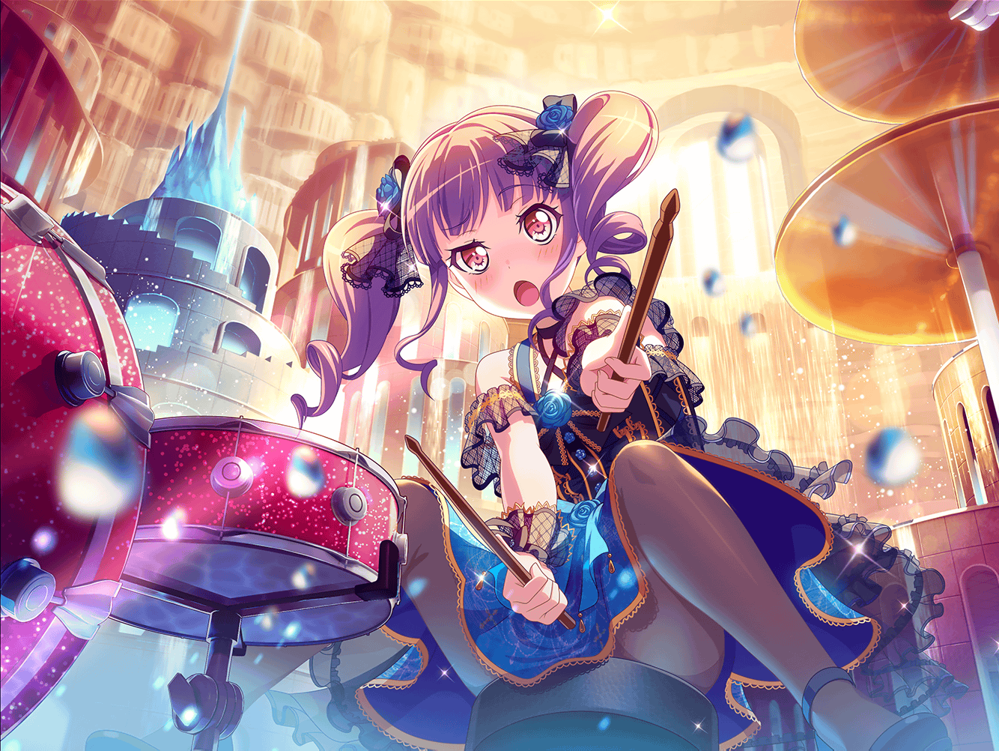

ショッピングモール
あこ
あ～、{{userName}}さん！
こんにちは～！
あこ
……えっと、あこはね、チョーカッコイイ洋服を買いに来たんだー
あこ
{{userName}}さんは、このパンクな感じの服と、
こっちのゴシックな感じの服、どっちがいいと思う？
あこ
どっちがいいか決められなくって、ずっと悩んでたんだよ～
あこ
参考までに意見を聞かせてっ！
あこ
……うんうん、なるほど。
そーなんだよね～、どっちも違ったカッコよさがあるもんね～
あこ
……あ、そういえば！
あこ
ちょっと{{userName}}さんに
話したかったことがあるんだ！
あこ
……え？
違うよ、今日はおねーちゃんの話じゃなくて、
紗夜さんの話をしようと思ったの！
あこ
……えっとね、この前、紗夜さんちょっと元気がなかったんだ
あこ
……ううん！
今はもう大丈夫だよ！
あこ
完全復活って感じ！
あこ
だけどあこ、あの時はすっごく心配してたんだ～
あこ
練習でも、ちょっと調子が悪かったみたいだし……
あこ
あの紗夜さんが、あんなにミスするところなんて、
あこ、今まで見たことなかったもん
あこ
あ、あこは結構ミスしちゃうんだけどね……えへへ……
あこ
……うん！
最近の紗夜さんは、いつも通り完璧だよ！
あこ
紗夜さんって、すっごいカッコイイよね～
あこ
ギターはすっごくうまいし、背も高いし、大人っぽいし！
あこ
あこの憧れランキングベストスリーに入ってるもん
あこ
……え？ １位？
あこ
そんなの聞かなくたってわかるでしょ～？
あこ
もちろんおねーちゃんに決まってるじゃん！
あこ
……あ、そういえば、紗夜さんが悩んでる時、
おねーちゃんと紗夜さんが、何か話したんだって！
あこ
……ううん！
おねーちゃんからは詳しく聞いてないよ！
あこ
だって、あこがすっごい聞いても教えてくれないんだもん！
あこ
姉同士の秘密……だって！
そんなのズルいよね～っ？
あこ
けどね、あこはおねーちゃんと紗夜さんが、
もっと仲良くなって欲しい、って思ってるんだ！
あこ
……え？
だって、おねーちゃんと紗夜さんが仲良くなったら、あこは
もっとも～っと、２人のカッコイイところを見つけられるもん！
あこ
こーいうの何て言うんだっけ？
あこ
……あ！ それだ！
一石二鳥っ！
あこ
もしそうなったら、あこはどんどんかっこよくなっちゃうよ～
あこ
おねーちゃんのカッコよさと、紗夜さんのカッコよさが合体したら
もーサイキョーって感じだもん！？
あこ
あ！
そしたらそこに友希那さんにもはいってもらわなきゃっ！
あこ
わわっ！ ど～しよ～！
あこ
あこの憧れランキングベストスリーがそろったら、
あこ……ほとんど無敵になっちゃうよ！
あこ
もしそうなったら楽しみだな～
あこ
……あ！
いつの間にか、結局おねーちゃんの話になっちゃってたっ！
あこ
……はははっ！
{{userName}}さんは、
最初から絶対そうなるって思ってた？
あこ
……えへへ。
まぁ、仕方ないかぁ～
あこ
だってあこ、おねーちゃんのこと大好きなんだもーん！
あこ
もちろん紗夜さんだって友希那さんだって大好きだよっ！
あこ
……え？ もう行くの？
あこ
う～ん、残念だけど仕方ないねっ。
それじゃあ、またあこの話、聞いてねー